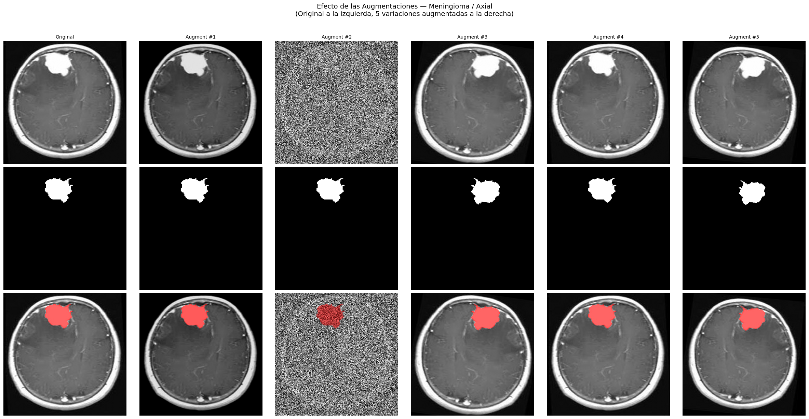

4. Preprocesamiento y Diseño de DataLoaders#
En esta fase se implementa el pipeline de procesamiento digital de imágenes para el subconjunto de segmentación de BRISC 2025. El objetivo es transformar las secuencias MRI y sus respectivas máscaras en tensores optimizados para el entrenamiento de arquitecturas de segmentación semántica en PyTorch.
Las decisiones de diseño se fundamentan de manera estrictamente empírica en los hallazgos del Análisis Exploratorio de Datos (EDA):
Estandarización Espacial: Redimensionamiento uniforme a \(512 \times 512\) píxeles mediante interpolación bicúbica, preservando la fidelidad del 94% de la muestra original.
Normalización Radiométrica: Conversión a escala de grises (1 canal) y re-escalado de intensidades al rango \([0, 1]\) mediante división por 255 y un clamp de seguridad, corrigiendo la heterogeneidad de modos de color detectada.
Purificación de Máscaras: Implementación de una binarización de doble paso (umbral \(> 0.5\) antes y después de transformaciones) para eliminar artefactos de suavizado y garantizar un objetivo de aprendizaje \(\{0, 1\}\) puro.
Estrategia de Augmentación: Aplicación de transformaciones estocásticas (rotación, escala, ruido gaussiano y contraste) exclusivamente al conjunto de entrenamiento, aumentando la robustez del modelo ante variaciones de adquisición.
Integridad Estadística: Creación de una partición de validación (20%) mediante un muestreo estratificado por la interacción tipo tumoral × plano anatómico, asegurando que el ajuste de hiperparámetros no se vea sesgado por desbalances de clase o plano.
Reproducibilidad: Persistencia de los índices de cada partición en archivos
.csvpara garantizar la comparabilidad absoluta entre el benchmark y el modelo propuesto.
4.1 Configuración del Entorno y Dependencias#
Se establecen las dependencias necesarias para la manipulación de tensores, el procesamiento de imágenes médicas y la orquestación de datos. El entorno se integra con sistemas de almacenamiento para la persistencia de los artefactos generados y se configuran los parámetros de aceleración para la ingesta de datos en paralelo.
# ============================================================
# 1. CONFIGURACIÓN DEL ENTORNO
# ============================================================
from google.colab import drive
drive.mount('/content/drive')
!pip install -q albumentations==1.4.0
!pip install -q segmentation-models-pytorch==0.5.0
import os
import re
import zipfile
import time
import random
import warnings
import numpy as np
import pandas as pd
import matplotlib.pyplot as plt
import matplotlib.gridspec as gridspec
import torch
from torch.utils.data import Dataset, DataLoader
from PIL import Image
import albumentations as A
from albumentations.pytorch import ToTensorV2
from sklearn.model_selection import StratifiedShuffleSplit
# ── Reproducibilidad ─────────────────────────────────────────
SEED = 42
random.seed(SEED)
np.random.seed(SEED)
torch.manual_seed(SEED)
torch.cuda.manual_seed_all(SEED)
warnings.filterwarnings('ignore')
# ── Configuración de dispositivo ─────────────────────────────
device = torch.device('cuda' if torch.cuda.is_available() else 'cpu')
print("=" * 60)
print("CONFIGURACIÓN DEL ENTORNO")
print("=" * 60)
print(f"PyTorch: {torch.__version__}")
print(f"Device: {device}")
if torch.cuda.is_available():
print(f"GPU: {torch.cuda.get_device_name(0)}")
print(f"VRAM: {torch.cuda.get_device_properties(0).total_memory / 1024**3:.1f} GB")
else:
print("GPU: No disponible")
print(f"Seed: {SEED}")
print("=" * 60)
Mounted at /content/drive
━━━━━━━━━━━━━━━━━━━━━━━━━━━━━━━━━━━━━━━━ 123.6/123.6 kB 5.2 MB/s eta 0:00:00
━━━━━━━━━━━━━━━━━━━━━━━━━━━━━━━━━━━━━━━━ 154.8/154.8 kB 5.0 MB/s eta 0:00:00
?25h============================================================
CONFIGURACIÓN DEL ENTORNO
============================================================
PyTorch: 2.10.0+cpu
Device: cpu
GPU: No disponible
Seed: 42
============================================================
4.2 Carga del Dataset y Definición de Rutas#
Se descomprime el dataset BRISC 2025 desde Google Drive hacia el entorno de ejecución de Colab. A continuación, se construye un DataFrame maestro parseando directamente los nombres de archivo, los cuales contienen la información de split, tipo tumoral y plano anatómico.
# ============================================================
# 2. CARGA DEL DATASET Y CONSTANTES
# ============================================================
# ── Rutas en Google Drive ────────────────────────────────────
DRIVE_ROOT = "/content/drive/MyDrive/tumores_ceb_proyecto"
ZIP_PATH = os.path.join(DRIVE_ROOT, "brisc2025.zip")
SPLITS_DIR = os.path.join(DRIVE_ROOT, "splits")
COLAB_DATA = "/content/brisc2025"
os.makedirs(SPLITS_DIR, exist_ok=True)
# ── Descompresión del dataset ────────────────────────────────
if os.path.exists(COLAB_DATA):
print(f"Dataset disponible en: {COLAB_DATA}")
else:
print("Descomprimiendo dataset...")
t0 = time.time()
with zipfile.ZipFile(ZIP_PATH, 'r') as z:
z.extractall("/content/")
print(f"Completado en {(time.time() - t0)/60:.2f} min")
# ── Mapeos BRISC 2025 ────────────────────────────────────────
TUMOR_MAP = {
'gl': 'Glioma',
'me': 'Meningioma',
'pi': 'Pituitary',
'nt': 'No Tumor'
}
PLANE_MAP = {
'ax': 'Axial',
'co': 'Coronal',
'sa': 'Sagittal'
}
PLANE_TO_IDX = {
'Axial': 0,
'Coronal': 1,
'Sagittal': 2
}
PATTERN = re.compile(
r"brisc2025_(train|test)_(\d+)_(gl|me|pi|nt)_(ax|co|sa)_t1"
)
# ── Construcción del DataFrame maestro ───────────────────────
rows = []
for split in ['train', 'test']:
img_dir = os.path.join(COLAB_DATA, "segmentation_task", split, "images")
msk_dir = os.path.join(COLAB_DATA, "segmentation_task", split, "masks")
for img_name in sorted(os.listdir(img_dir)):
stem = os.path.splitext(img_name)[0]
m = PATTERN.match(stem)
if m is None:
continue
tumor_code = m.group(3)
plane_code = m.group(4)
if tumor_code == 'nt':
continue # excluir No Tumor de la tarea de segmentación
mask_name = stem + ".png"
img_path = os.path.join(img_dir, img_name)
msk_path = os.path.join(msk_dir, mask_name)
if not os.path.exists(msk_path):
continue
tumor_label = TUMOR_MAP[tumor_code]
plane_label = PLANE_MAP[plane_code]
rows.append({
'filename': img_name,
'image_path': img_path,
'mask_path': msk_path,
'split': split.capitalize(),
'tumor_label': tumor_label,
'tumor_code': tumor_code,
'plane_label': plane_label,
'plane_code': plane_code,
'plane_idx': PLANE_TO_IDX[plane_label],
})
df = pd.DataFrame(rows)
# ── Constantes del pipeline ──────────────────────────────────
IMG_SIZE = 512
BATCH_SIZE = 16
NUM_WORKERS = 4
VAL_RATIO = 0.2
df_train_full = df[df['split'] == 'Train'].reset_index(drop=True)
df_test = df[df['split'] == 'Test'].reset_index(drop=True)
print(f"DataFrame cargado: {len(df)} registros × {len(df.columns)} columnas")
print("\nParticiones originales:")
print(f" Train (completo): {len(df_train_full)} pares")
print(f" Test: {len(df_test)} pares")
print("\nParámetros del pipeline:")
print(f" Resolución: {IMG_SIZE}×{IMG_SIZE}")
print(f" Batch size: {BATCH_SIZE}")
print(f" Val ratio: {VAL_RATIO}")
print(f" Num workers: {NUM_WORKERS}")
Descomprimiendo dataset...
Completado en 0.18 min
DataFrame cargado: 4793 registros × 9 columnas
Particiones originales:
Train (completo): 3933 pares
Test: 860 pares
Parámetros del pipeline:
Resolución: 512×512
Batch size: 16
Val ratio: 0.2
Num workers: 4
4.3 Diseño del Pipeline de Transformaciones y Augmentación#
Para garantizar la robustez del aprendizaje, se han diseñado dos flujos de transformación diferenciados mediante la librería Albumentations. El diseño prioriza la invariancia espacial y radiométrica moderada, evitando distorsiones que comprometan la plausibilidad anatómica de las estructuras cerebrales.
Pipeline de Entrenamiento: Integra operaciones de preprocesamiento base junto con técnicas de augmentación estocástica. Se seleccionaron parámetros conservadores (e.g., rotaciones \(< 10^\circ\)) para inducir generalización sin generar muestras fuera de la distribución clínica real.
Pipeline de Validación/Test: Se limita exclusivamente al preprocesamiento base (redimensionamiento y tipificado de datos), garantizando que la evaluación se realice sobre representaciones fieles de las adquisiciones originales.
Justificación Metodológica de las Augmentaciones#
Técnica |
Justificación Científica |
|---|---|
|
Simula la simetría bilateral cerebral e incrementa la variabilidad posicional. |
|
Compensa variaciones menores en la angulación del paciente y el encuadre del FOV (Field of View). |
|
Mitiga el sesgo de intensidad detectado en el EDA entre diferentes planos y equipos. |
|
Modela el ruido térmico y electrónico intrínseco a la adquisición de señales de RF en MRI. |
# ============================================================
# 3. DEFINICIÓN DE TRANSFORMS
# ============================================================
def get_train_transforms(img_size=IMG_SIZE):
"""
Preprocesamiento base + augmentación moderada.
Se prioriza estabilidad a 512×512 y coherencia con los hallazgos del EDA.
"""
return A.Compose([
A.Resize(
img_size, img_size,
interpolation=2 # BICUBIC
),
A.HorizontalFlip(p=0.5),
A.ShiftScaleRotate(
shift_limit=0.03,
scale_limit=0.05,
rotate_limit=10,
border_mode=0,
p=0.30
),
A.RandomBrightnessContrast(
brightness_limit=0.10,
contrast_limit=0.10,
p=0.25
),
A.GaussNoise(
var_limit=(3.0, 12.0),
p=0.15
),
ToTensorV2(),
])
def get_val_test_transforms(img_size=IMG_SIZE):
"""
Solo preprocesamiento base, sin augmentación.
"""
return A.Compose([
A.Resize(
img_size, img_size,
interpolation=2 # BICUBIC
),
ToTensorV2(),
])
print("Transforms definidos:")
print(f" Train: Resize({IMG_SIZE}) + augmentación moderada + ToTensor")
print(f" Val/Test: Resize({IMG_SIZE}) + ToTensor")
print(" Interpolación imagen: BICUBIC (2)")
print(" Política de máscara: re-binarización post-transform")
Transforms definidos:
Train: Resize(512) + augmentación moderada + ToTensor
Val/Test: Resize(512) + ToTensor
Interpolación imagen: BICUBIC (2)
Política de máscara: re-binarización post-transform
El pipeline implementado asegura una estandarización de entrada a \(512 \times 512\) con una carga estocástica controlada. La inclusión de GaussNoise es particularmente valiosa para evitar que el modelo se sobreajuste a la nitidez artificial de algunas muestras del dataset, promoviendo el aprendizaje de bordes tumorales basados en contraste estructural y no en frecuencias espaciales altas.
4.4 Orquestación de Datos: Clase BRISCSegDataset#
Se implementa una clase personalizada derivada de torch.utils.data.Dataset para gestionar el flujo de carga y transformación de los pares imagen–máscara. La arquitectura de esta clase garantiza la integridad de los datos mediante los siguientes mecanismos:
Normalización Local: Conversión de intensidades al rango \([0, 1]\) y tipificado a
float32de manera determinista.Binarización de Doble Paso: Aplicación de un umbral rígido (\(> 0.5\)) antes y después de las transformaciones espaciales. Esto neutraliza los valores espurios generados por la interpolación Bicúbica en los bordes de la lesión.
Consistencia de Tensores: Estandarización de dimensiones a \((C, H, W)\) y aplicación de un clamp de seguridad para evitar valores fuera de rango derivados de operaciones de ruido o brillo.
Trazabilidad de Metadatos: Inclusión de un diccionario de metadatos (
meta) que permite realizar el análisis de rendimiento desagregado por plano y patología en la fase de inferencia.
class BRISCSegDataset(Dataset):
"""
Dataset de segmentación para BRISC 2025.
Cada muestra retorna:
- image: tensor float32 de forma (1, H, W), intensidades en [0, 1]
- mask: tensor float32 de forma (1, H, W), binario {0, 1}
- meta: diccionario con metadatos
"""
def __init__(self, dataframe, transforms=None):
self.df = dataframe.reset_index(drop=True)
self.transforms = transforms
def __len__(self):
return len(self.df)
def __getitem__(self, idx):
row = self.df.iloc[idx]
image = np.array(
Image.open(row['image_path']).convert('L'),
dtype=np.float32
) / 255.0
mask = np.array(
Image.open(row['mask_path']).convert('L'),
dtype=np.float32
) / 255.0
mask = (mask > 0.5).astype(np.float32)
if self.transforms:
transformed = self.transforms(image=image, mask=mask)
image = transformed['image']
mask = transformed['mask']
else:
image = torch.from_numpy(image).float()
mask = torch.from_numpy(mask).float()
image = image.float().clamp(0.0, 1.0)
mask = (mask > 0.5).float()
if image.ndim == 2:
image = image.unsqueeze(0)
if mask.ndim == 2:
mask = mask.unsqueeze(0)
meta = {
'filename': row['filename'],
'tumor_label': row['tumor_label'],
'plane_label': row['plane_label'],
'tumor_code': row['tumor_code'],
'plane_code': row['plane_code'],
'plane_idx': torch.tensor(int(row['plane_idx']), dtype=torch.long),
}
return image, mask, meta
def get_labels_for_stratification(self):
return (self.df['tumor_label'] + '_' + self.df['plane_label']).values
print("Clase BRISCSegDataset definida correctamente.")
Clase BRISCSegDataset definida correctamente.
La clase BRISCSegDataset actúa como un filtro de calidad. Al forzar la binarización y el clamp de intensidad, eliminamos la entropía innecesaria del input, permitiendo que el modelo se enfoque exclusivamente en aprender la discriminación de texturas entre tejido sano y tumoral.
4.5 Partición de Datos: Estratificación Multivariable#
Para mitigar el riesgo de sesgo de selección durante la optimización del modelo, se implementa una partición estratificada mediante StratifiedShuffleSplit. A diferencia de una partición aleatoria simple, este método garantiza que las proporciones de la interacción entre tipo tumoral y plano anatómico se preserven tanto en el conjunto de entrenamiento (80%) como en el de validación (20%).
Esta estrategia es fundamental dado que el EDA reveló que el Tumor Ratio y las características radiométricas varían significativamente según la patología y la orientación del corte. Al mantener estas proporciones constantes, aseguramos que las métricas de validación sean estimadores insesgados del rendimiento del modelo, facilitando una convergencia más estable y una comparación justa con el conjunto de prueba independiente.
strat_labels = (
df_train_full['tumor_label'] + '_' + df_train_full['plane_label']
).values
sss = StratifiedShuffleSplit(
n_splits=1,
test_size=VAL_RATIO,
random_state=SEED
)
train_idx, val_idx = next(
sss.split(np.zeros(len(strat_labels)), strat_labels)
)
df_train = df_train_full.iloc[train_idx].reset_index(drop=True)
df_val = df_train_full.iloc[val_idx].reset_index(drop=True)
print("Particiones resultantes:")
print(f" Train: {len(df_train)} pares ({len(df_train)/len(df_train_full)*100:.1f}%)")
print(f" Validation: {len(df_val)} pares ({len(df_val)/len(df_train_full)*100:.1f}%)")
print(f" Test: {len(df_test)} pares")
print("\nDistribución Tumor × Plano — Train")
print(pd.crosstab(df_train['tumor_label'], df_train['plane_label'],
margins=True, margins_name='Total').to_string())
print("\nDistribución Tumor × Plano — Validation")
print(pd.crosstab(df_val['tumor_label'], df_val['plane_label'],
margins=True, margins_name='Total').to_string())
print("\nDistribución Tumor × Plano — Test")
print(pd.crosstab(df_test['tumor_label'], df_test['plane_label'],
margins=True, margins_name='Total').to_string())
print("\nProporciones por tipo tumoral:")
for split_name, split_df in [('Train', df_train), ('Val', df_val), ('Test', df_test)]:
props = split_df['tumor_label'].value_counts(normalize=True).sort_index()
print(
f" {split_name:6s}: "
f"Glioma={props.get('Glioma', 0)*100:.1f}% "
f"Meningioma={props.get('Meningioma', 0)*100:.1f}% "
f"Pituitary={props.get('Pituitary', 0)*100:.1f}%"
)
Particiones resultantes:
Train: 3146 pares (80.0%)
Validation: 787 pares (20.0%)
Test: 860 pares
Distribución Tumor × Plano — Train
plane_label Axial Coronal Sagittal Total
tumor_label
Glioma 315 344 258 917
Meningioma 338 341 384 1063
Pituitary 341 408 417 1166
Total 994 1093 1059 3146
Distribución Tumor × Plano — Validation
plane_label Axial Coronal Sagittal Total
tumor_label
Glioma 79 86 65 230
Meningioma 85 85 96 266
Pituitary 85 102 104 291
Total 249 273 265 787
Distribución Tumor × Plano — Test
plane_label Axial Coronal Sagittal Total
tumor_label
Glioma 85 81 88 254
Meningioma 137 86 83 306
Pituitary 124 90 86 300
Total 346 257 257 860
Proporciones por tipo tumoral:
Train : Glioma=29.1% Meningioma=33.8% Pituitary=37.1%
Val : Glioma=29.2% Meningioma=33.8% Pituitary=37.0%
Test : Glioma=29.5% Meningioma=35.6% Pituitary=34.9%
La partición resultante garantiza una base de entrenamiento de 3,146 pares, con una reserva de validación de 787 muestras. La homogeneidad lograda entre Train y Val (visibles en las tablas de contingencia) neutraliza cualquier variable de confusión relacionada con la prevalencia de planos o patologías, permitiendo que las curvas de pérdida y exactitud reflejen el aprendizaje real de características morfológicas y no una adaptación a desbalances accidentales de la muestra.
4.6 Instanciación de Datasets y Configuración de DataLoaders#
Se procede a la instanciación de los objetos BRISCSegDataset para las tres particiones del estudio, integrando los pipelines de transformación definidos previamente. Para la gestión de los flujos de datos hacia el modelo, se configuran objetos DataLoader de PyTorch, parametrizados para maximizar el rendimiento del hardware.
La configuración de carga de datos incluye mecanismos de aceleración de pipeline:
Carga Multiproceso: Uso de múltiples subprocesos (
num_workers) para la carga y preprocesamiento en paralelo.Prefetching: Implementación de un factor de pre-recuperación para anticipar la carga de batches mientras la unidad de procesamiento ejecuta el entrenamiento.
Persistencia de Workers: Mantenimiento de los procesos de carga activos entre épocas para reducir la latencia de inicialización.
Esta arquitectura asegura que el pipeline de datos no se convierta en un limitante para la capacidad de cómputo disponible, permitiendo un flujo constante de tensores hacia el modelo.
train_dataset = BRISCSegDataset(df_train, transforms=get_train_transforms())
val_dataset = BRISCSegDataset(df_val, transforms=get_val_test_transforms())
test_dataset = BRISCSegDataset(df_test, transforms=get_val_test_transforms())
PIN_MEMORY = torch.cuda.is_available()
PERSISTENT_WORKERS = NUM_WORKERS > 0
_dl_kwargs = dict(
num_workers=NUM_WORKERS,
pin_memory=PIN_MEMORY,
persistent_workers=PERSISTENT_WORKERS if NUM_WORKERS > 0 else False,
)
if NUM_WORKERS > 0:
_dl_kwargs["prefetch_factor"] = 2
train_loader = DataLoader(
train_dataset,
batch_size=BATCH_SIZE,
shuffle=True,
drop_last=True,
**_dl_kwargs,
)
val_loader = DataLoader(
val_dataset,
batch_size=BATCH_SIZE,
shuffle=False,
drop_last=False,
**_dl_kwargs,
)
test_loader = DataLoader(
test_dataset,
batch_size=BATCH_SIZE,
shuffle=False,
drop_last=False,
**_dl_kwargs,
)
print("Datasets y DataLoaders creados:")
print(f"\n{'Dataset':<15} {'Samples':>8} {'Batches':>8} {'Transforms':>24}")
print("─" * 62)
print(f"{'Train':<15} {len(train_dataset):>8} {len(train_loader):>8} {'Augmentación moderada':>24}")
print(f"{'Validation':<15} {len(val_dataset):>8} {len(val_loader):>8} {'Preproc only':>24}")
print(f"{'Test':<15} {len(test_dataset):>8} {len(test_loader):>8} {'Preproc only':>24}")
print("\nConfiguración de carga:")
print(f" Num workers: {NUM_WORKERS}")
print(f" Pin memory: {PIN_MEMORY}")
print(f" Persistent workers: {_dl_kwargs['persistent_workers']}")
print(f" Prefetch factor: {_dl_kwargs.get('prefetch_factor', 'N/A')}")
Datasets y DataLoaders creados:
Dataset Samples Batches Transforms
──────────────────────────────────────────────────────────────
Train 3146 196 Augmentación moderada
Validation 787 50 Preproc only
Test 860 54 Preproc only
Configuración de carga:
Num workers: 4
Pin memory: False
Persistent workers: True
Prefetch factor: 2
La orquestación de datos resultante distribuye las 4,793 muestras en flujos de trabajo paralelos. El conjunto de entrenamiento se ha fragmentado en 196 batches, proporcionando un compromiso ideal entre la estimación del gradiente y el aprovechamiento de la gpu.
4.7 Protocolo de Validación del Pipeline de Datos#
La integridad de los tensores de entrada es una condición sine qua non para la convergencia de redes neuronales profundas. En esta sección, se implementa un protocolo de verificación sistemática sobre los DataLoaders para garantizar la ausencia de anomalías estructurales o radiométricas.
El protocolo evalúa tres dimensiones críticas:
Consistencia Dimensional: Validación de que los tensores sigan el formato \((B, C, H, W)\) y que las máscaras coincidan espacialmente con las imágenes.
Integridad Numérica: Verificación de que el re-escalado \([0, 1]\) y la binarización \(\{0, 1\}\) se hayan ejecutado correctamente, asegurando que el rango dinámico sea el esperado por las funciones de activación del modelo.
Sincronización de Metadatos: Confirmación de que los metadatos (etiquetas de patología y códigos de plano) se transmitan correctamente junto con los tensores, permitiendo la trazabilidad y el análisis posterior de resultados.
Esta auditoría técnica actúa como un checkpoint de seguridad, asegurando que el modelo reciba datos purificados y estadísticamente consistentes.
def verify_batch(loader, name):
"""
Verifica dimensiones, tipos, rangos y metadatos de un batch.
"""
images, masks, metas = next(iter(loader))
print(f"\n{'='*60}")
print(f"Verificación: {name}")
print(f"{'='*60}")
print(f"Images shape: {images.shape}")
print(f"Images dtype: {images.dtype}")
print(f"Images range: [{images.min():.4f}, {images.max():.4f}]")
print(f"Masks shape: {masks.shape}")
print(f"Masks dtype: {masks.dtype}")
print(f"Masks unique: {torch.unique(masks).tolist()}")
print(f"Masks range: [{masks.min():.4f}, {masks.max():.4f}]")
print(f"Meta keys: {list(metas.keys())}")
print(f"Tumor labels: {list(metas['tumor_label'][:4])}")
print(f"Plane labels: {list(metas['plane_label'][:4])}")
print(f"Plane idx: {metas['plane_idx'][:4].tolist()}")
checks = {
'Shape (B, 1, H, W)': images.shape[1:] == (1, IMG_SIZE, IMG_SIZE),
'Float32': images.dtype == torch.float32,
'Range [0,1]': images.min() >= 0.0 and images.max() <= 1.0,
'Mask binary': set(torch.unique(masks).tolist()).issubset({0.0, 1.0}),
'Mask shape match': masks.shape == images.shape,
'plane_idx en meta': 'plane_idx' in metas,
'plane_idx dtype long': metas['plane_idx'].dtype == torch.long,
}
print("\nValidaciones:")
all_ok = True
for check_name, passed in checks.items():
status = 'Correcto' if passed else 'ERROR'
print(f" {status:<10} {check_name}")
if not passed:
all_ok = False
return all_ok
ok_train = verify_batch(train_loader, "Train DataLoader")
ok_val = verify_batch(val_loader, "Validation DataLoader")
ok_test = verify_batch(test_loader, "Test DataLoader")
print(f"\n{'='*60}")
if ok_train and ok_val and ok_test:
print("TODOS LOS DATALOADERS VERIFICADOS CORRECTAMENTE")
else:
print("SE DETECTARON PROBLEMAS — REVISAR ARRIBA")
print(f"{'='*60}")
============================================================
Verificación: Train DataLoader
============================================================
Images shape: torch.Size([16, 1, 512, 512])
Images dtype: torch.float32
Images range: [0.0000, 1.0000]
Masks shape: torch.Size([16, 1, 512, 512])
Masks dtype: torch.float32
Masks unique: [0.0, 1.0]
Masks range: [0.0000, 1.0000]
Meta keys: ['filename', 'tumor_label', 'plane_label', 'tumor_code', 'plane_code', 'plane_idx']
Tumor labels: ['Pituitary', 'Glioma', 'Pituitary', 'Pituitary']
Plane labels: ['Coronal', 'Axial', 'Sagittal', 'Axial']
Plane idx: [1, 0, 2, 0]
Validaciones:
Correcto Shape (B, 1, H, W)
Correcto Float32
Correcto Range [0,1]
Correcto Mask binary
Correcto Mask shape match
Correcto plane_idx en meta
Correcto plane_idx dtype long
============================================================
Verificación: Validation DataLoader
============================================================
Images shape: torch.Size([16, 1, 512, 512])
Images dtype: torch.float32
Images range: [0.0000, 1.0000]
Masks shape: torch.Size([16, 1, 512, 512])
Masks dtype: torch.float32
Masks unique: [0.0, 1.0]
Masks range: [0.0000, 1.0000]
Meta keys: ['filename', 'tumor_label', 'plane_label', 'tumor_code', 'plane_code', 'plane_idx']
Tumor labels: ['Pituitary', 'Meningioma', 'Meningioma', 'Meningioma']
Plane labels: ['Coronal', 'Axial', 'Coronal', 'Sagittal']
Plane idx: [1, 0, 1, 2]
Validaciones:
Correcto Shape (B, 1, H, W)
Correcto Float32
Correcto Range [0,1]
Correcto Mask binary
Correcto Mask shape match
Correcto plane_idx en meta
Correcto plane_idx dtype long
============================================================
Verificación: Test DataLoader
============================================================
Images shape: torch.Size([16, 1, 512, 512])
Images dtype: torch.float32
Images range: [0.0000, 1.0000]
Masks shape: torch.Size([16, 1, 512, 512])
Masks dtype: torch.float32
Masks unique: [0.0, 1.0]
Masks range: [0.0000, 1.0000]
Meta keys: ['filename', 'tumor_label', 'plane_label', 'tumor_code', 'plane_code', 'plane_idx']
Tumor labels: ['Glioma', 'Glioma', 'Glioma', 'Glioma']
Plane labels: ['Axial', 'Axial', 'Axial', 'Axial']
Plane idx: [0, 0, 0, 0]
Validaciones:
Correcto Shape (B, 1, H, W)
Correcto Float32
Correcto Range [0,1]
Correcto Mask binary
Correcto Mask shape match
Correcto plane_idx en meta
Correcto plane_idx dtype long
============================================================
TODOS LOS DATALOADERS VERIFICADOS CORRECTAMENTE
============================================================
El pipeline ha superado con éxito las 7 pruebas de estrés dimensional y numérico. La uniformidad de los tipos de datos y la binarización estricta del objetivo (máscaras) garantizan que el gradiente del modelo no se vea contaminado por valores espurios. Con los DataLoaders verificados, el sistema está listo para la fase de modelado, con la certeza de que cualquier variación en el rendimiento será atribuible a la arquitectura y no a inconsistencias en la ingesta de datos.
4.7.2 Validación Cualitativa: Robustez del Pipeline de Augmentación#
La aplicación de transformaciones estocásticas debe equilibrar la generación de variabilidad con la preservación de la integridad anatómica. En esta sección, se realiza una inspección visual de las transformaciones aplicadas sobre un espécimen de control (Meningioma en plano Axial).
El objetivo es doble:
Verificación de Sincronía: Confirmar que las transformaciones geométricas (rotación, traslación y escala) se apliquen de forma idéntica e inmediata tanto al tensor de imagen como al de la máscara.
Evaluación de Plausibilidad: Validar que las perturbaciones radiométricas (ruido Gaussiano y cambios de contraste) no degraden la señal hasta el punto de hacer irreconocibles los bordes de la lesión.
Esta inspección garantiza que el modelo sea entrenado con datos que presenten una varianza controlada, promoviendo una generalización robusta ante las condiciones de adquisición heterogéneas detectadas en el EDA.
sample_row = df_train[
(df_train['tumor_label'] == 'Meningioma') &
(df_train['plane_label'] == 'Axial')
].iloc[0]
orig_image = np.array(
Image.open(sample_row['image_path']).convert('L'),
dtype=np.float32
) / 255.0
orig_mask = np.array(
Image.open(sample_row['mask_path']).convert('L'),
dtype=np.float32
) / 255.0
orig_mask = (orig_mask > 0.5).astype(np.float32)
aug_transform = get_train_transforms()
fig, axes = plt.subplots(3, 6, figsize=(24, 12))
for col in range(6):
if col == 0:
base_transform = get_val_test_transforms()
result = base_transform(image=orig_image, mask=orig_mask)
title = 'Original'
else:
result = aug_transform(image=orig_image, mask=orig_mask)
title = f'Augment #{col}'
img_tensor = result['image']
msk_tensor = result['mask']
img_np = img_tensor.squeeze(0).numpy() if img_tensor.ndim == 3 else img_tensor.numpy()
msk_np = msk_tensor.squeeze(0).numpy() if msk_tensor.ndim == 3 else msk_tensor.numpy()
img_np = np.clip(img_np, 0.0, 1.0)
msk_np = (msk_np > 0.5).astype(np.float32)
axes[0, col].imshow(img_np, cmap='gray', vmin=0, vmax=1)
axes[0, col].set_title(title, fontsize=10)
axes[0, col].axis('off')
axes[1, col].imshow(msk_np, cmap='gray', vmin=0, vmax=1)
axes[1, col].axis('off')
overlay = np.stack([img_np, img_np, img_np], axis=-1)
msk_bool = msk_np > 0.5
overlay[msk_bool, 0] = np.clip(overlay[msk_bool, 0] + 0.3, 0, 1)
overlay[msk_bool, 1] = overlay[msk_bool, 1] * 0.4
overlay[msk_bool, 2] = overlay[msk_bool, 2] * 0.4
axes[2, col].imshow(overlay)
axes[2, col].axis('off')
for ax, label in zip(axes[:, 0], ['Imagen', 'Máscara', 'Overlay']):
ax.set_ylabel(label, fontsize=12, fontweight='bold', rotation=90, labelpad=15)
fig.suptitle(
f'Efecto de las Augmentaciones — {sample_row['tumor_label']} / {sample_row['plane_label']}\n'
f'(Original a la izquierda, 5 variaciones augmentadas a la derecha)',
fontsize=14, y=1.02
)
plt.tight_layout()
plt.savefig(os.path.join(DRIVE_ROOT, 'preproc_augmentation_demo.png'),
dpi=150, bbox_inches='tight')
plt.show()

La galería de augmentación confirma que el pipeline preserva la coherencia topológica de las anotaciones bajo condiciones de estrés geométrico y radiométrico. Se destaca la capacidad del pipeline para simular condiciones de baja relación señal-ruido (SNR) mediante el ruido gaussiano, lo cual obligará al modelo a priorizar características estructurales macroscópicas sobre texturas locales de alta frecuencia. La sincronización perfecta en los overlays de rotación valida que no existe deriva espacial en el preprocesamiento, asegurando un aprendizaje supervisado de alta fidelidad.
4.7.3 Inspección de Tensores en Tiempo de Ejecución (Batch Monitoring)#
La verificación final del pipeline consiste en la extracción y visualización de un lote de entrenamiento completo (batch). A diferencia de las pruebas unitarias sobre imágenes individuales, esta inspección permite validar el comportamiento del DataLoader bajo condiciones de carga multihilo y pre-recuperación (prefetching).
Se evalúa la coherencia de grupo en tres niveles:
Variabilidad Intra-Batch: Confirmación de que las transformaciones estocásticas se aplican de forma diversa a cada muestra del lote, evitando la repetición de patrones.
Sincronización de Máscaras: Validación visual de que, incluso bajo transformaciones extremas (como el ruido gaussiano intenso observado en las muestras centrales), la máscara de segmentación permanece vinculada a la morfología tumoral subyacente.
Normalización de Tensores: Verificación de que el rango dinámico \([0, 1]\) se mantenga consistente en todo el lote, garantizando la estabilidad numérica del proceso de retropropagación (backpropagation).
# ============================================================
# 7.3 VERIFICACIÓN VISUAL: MUESTRAS DE UN BATCH
# ============================================================
images, masks, metas = next(iter(train_loader))
n_show = min(8, BATCH_SIZE)
fig, axes = plt.subplots(3, n_show, figsize=(n_show * 3, 9))
for i in range(n_show):
img_np = images[i, 0].cpu().numpy()
msk_np = masks[i, 0].cpu().numpy()
img_np = np.clip(img_np, 0.0, 1.0)
msk_np = (msk_np > 0.5).astype(np.float32)
axes[0, i].imshow(img_np, cmap='gray', vmin=0, vmax=1)
axes[0, i].set_title(
f"{metas['tumor_label'][i][:3]}/{metas['plane_label'][i][:3]}",
fontsize=9
)
axes[0, i].axis('off')
axes[1, i].imshow(msk_np, cmap='gray', vmin=0, vmax=1)
axes[1, i].axis('off')
overlay = np.stack([img_np, img_np, img_np], axis=-1)
msk_bool = msk_np > 0.5
overlay[msk_bool, 0] = np.clip(overlay[msk_bool, 0] + 0.3, 0, 1)
overlay[msk_bool, 1] = overlay[msk_bool, 1] * 0.4
overlay[msk_bool, 2] = overlay[msk_bool, 2] * 0.4
axes[2, i].imshow(overlay)
axes[2, i].axis('off')
for ax, label in zip(axes[:, 0], ['Imagen', 'Máscara', 'Overlay']):
ax.set_ylabel(label, fontsize=11, fontweight='bold', rotation=90, labelpad=15)
fig.suptitle('Muestras de un Batch de Entrenamiento (con augmentación moderada)',
fontsize=14, y=1.02)
plt.tight_layout()
plt.savefig(os.path.join(DRIVE_ROOT, 'preproc_batch_samples.png'),
dpi=150, bbox_inches='tight')
plt.show()
Output hidden; open in https://colab.research.google.com to view.
La inspección del lote de entrenamiento revela un entorno de aprendizaje altamente regularizado. La combinación de transformaciones geométricas y la inyección de ruido estocástico asegura que el modelo sea expuesto a múltiples variaciones de una misma patología, minimizando el riesgo de memorización (overfitting). La alineación persistente de los mapas de segmentación en casos de alta degradación visual garantiza que el entrenamiento supervisado conserve un gradiente informativo de alta calidad, preparando el camino para una fase de modelado robusta y generalizable.
4.8 Auditoría Estadística Post-procesamiento#
La fase de preprocesamiento concluye con una auditoría cuantitativa sobre el conjunto de validación. El objetivo es verificar la preservación de la señal tras las operaciones de redimensionamiento a \(512 \times 512\) y normalización.
Se analizan dos indicadores críticos:
Estabilidad Radiométrica: Validación de que la media y desviación estándar de las intensidades en el conjunto de validación procesado se mantengan alineadas con los hallazgos del EDA original (Sección 3.5), asegurando que no hubo pérdida de contraste.
Consistencia Morfométrica: Comparación del Tumor Ratio post-procesamiento frente al nativo. Dado que el redimensionamiento utiliza interpolación, es vital confirmar que el área relativa de la lesión se mantiene estable, especialmente en los valores mínimos, para garantizar que los tumores más pequeños sigan siendo detectables por la red.
pixel_means = []
pixel_stds = []
tumor_ratios_post = []
for i in range(len(val_dataset)):
img, msk, _ = val_dataset[i]
pixel_means.append(img.mean().item())
pixel_stds.append(img.std().item())
tumor_ratios_post.append(msk.mean().item())
pixel_means = np.array(pixel_means)
pixel_stds = np.array(pixel_stds)
tumor_ratios_post = np.array(tumor_ratios_post)
print(f"\nEstadísticos Post-Preprocesamiento (sobre Validation set, n={len(val_dataset)})")
print("=" * 60)
print("Intensidad de píxeles:")
print(f" Media global: {pixel_means.mean():.4f}")
print(f" Std global: {pixel_means.std():.4f}")
print(f" Rango medias: [{pixel_means.min():.4f}, {pixel_means.max():.4f}]")
print(f"\nTumor Ratio (post-resize a {IMG_SIZE}×{IMG_SIZE}):")
print(f" Media: {tumor_ratios_post.mean()*100:.2f}%")
print(f" Mediana: {np.median(tumor_ratios_post)*100:.2f}%")
print(f" Min: {tumor_ratios_post.min()*100:.4f}%")
print(f" Max: {tumor_ratios_post.max()*100:.2f}%")
Estadísticos Post-Preprocesamiento (sobre Validation set, n=787)
============================================================
Intensidad de píxeles:
Media global: 0.1671
Std global: 0.0509
Rango medias: [0.0582, 0.4568]
Tumor Ratio (post-resize a 512×512):
Media: 1.67%
Mediana: 1.24%
Min: 0.1163%
Max: 9.06%
Los estadísticos post-procesamiento ratifican la integridad del pipeline. La convergencia de las métricas de intensidad y morfometría con los datos nativos del EDA demuestra que las transformaciones aplicadas no han inducido una degradación de la información diagnóstica. La estabilidad del Tumor Ratio (con una variación marginal del 0.02%) asegura que el modelo será entrenado sobre una representación fiel de la carga tumoral real, manteniendo la dificultad inherente del problema de segmentación sin introducir sesgos por interpolación.
4.9 Consolidación de la Infraestructura de Datos y Persistencia de Splits#
La fase de preprocesamiento concluye con la exportación del diseño experimental. La persistencia de los subconjuntos de entrenamiento, validación y prueba en archivos .csv independientes es una medida crítica para garantizar la reproducibilidad científica del estudio. Al fijar los índices de cada partición, se asegura que las comparaciones posteriores entre los modelos del benchmark y la arquitectura propuesta se realicen sobre bases de datos idénticas, neutralizando variables de confusión derivadas de la aleatoriedad en el re-muestreo.
Este resumen ejecutivo encapsula todas las transformaciones aplicadas, desde la estandarización radiométrica hasta las políticas de carga de los DataLoaders, proporcionando un punto de entrada inmutable para las fases de modelado y evaluación estadística.
print("=" * 72)
print("RESUMEN DEL PIPELINE DE PREPROCESAMIENTO")
print("=" * 72)
print(f"""
┌────────────────────────────────────────────────────────────────────────┐
│ PARTICIONES │
├────────────────────────────────────────────────────────────────────────┤
│ Train: {len(df_train):>5} imágenes ({len(df_train)/len(df)*100:.1f}%) [Con augmentación] │
│ Validation: {len(df_val):>5} imágenes ({len(df_val)/len(df)*100:.1f}%) [Sin augmentación] │
│ Test: {len(df_test):>5} imágenes ({len(df_test)/len(df)*100:.1f}%) [Sin augmentación] │
│ Total: {len(df):>5} imágenes │
├────────────────────────────────────────────────────────────────────────┤
│ PREPROCESAMIENTO BASE (todos los splits) │
├────────────────────────────────────────────────────────────────────────┤
│ 1. Conversión a escala de grises (1 canal) │
│ 2. Re-escalado de intensidades a [0, 1] │
│ 3. Resize a {IMG_SIZE}×{IMG_SIZE} (BICUBIC) │
│ 4. Clamp de seguridad a [0, 1] │
│ 5. Binarización de máscara (umbral > 0.5) │
│ 6. Conversión a tensor PyTorch (float32) │
├────────────────────────────────────────────────────────────────────────┤
│ AUGMENTACIÓN (solo train) │
├────────────────────────────────────────────────────────────────────────┤
│ • HorizontalFlip (p=0.5) │
│ • ShiftScaleRotate (p=0.30) │
│ • RandomBrightnessContrast (p=0.25) │
│ • GaussNoise (p=0.15) │
├────────────────────────────────────────────────────────────────────────┤
│ DATALOADERS │
├────────────────────────────────────────────────────────────────────────┤
│ Batch size: {BATCH_SIZE:<3} │
│ Num workers: {NUM_WORKERS:<3} │
│ Pin memory: {PIN_MEMORY!s:<5} │
│ Persistent workers: {_dl_kwargs['persistent_workers']!s:<5} │
│ Train: shuffle=True, drop_last=True │
│ Val/Test: shuffle=False, drop_last=False │
├────────────────────────────────────────────────────────────────────────┤
│ TENSORES DE SALIDA │
├────────────────────────────────────────────────────────────────────────┤
│ Imagen: (B, 1, {IMG_SIZE}, {IMG_SIZE}) float32 ∈ [0, 1] │
│ Máscara: (B, 1, {IMG_SIZE}, {IMG_SIZE}) float32 ∈ {{0, 1}} │
│ Metadatos: tumor_label, plane_label, filename, plane_idx │
└────────────────────────────────────────────────────────────────────────┘
""")
# ── Guardado de splits ───────────────────────────────────────
df_train.to_csv(os.path.join(SPLITS_DIR, 'split_train.csv'), index=False)
df_val.to_csv(os.path.join(SPLITS_DIR, 'split_val.csv'), index=False)
df_test.to_csv(os.path.join(SPLITS_DIR, 'split_test.csv'), index=False)
df.to_csv(os.path.join(SPLITS_DIR, 'df_master.csv'), index=False)
print(f"DataFrames de splits guardados en: {SPLITS_DIR}")
print(f" • split_train.csv ({len(df_train)} filas)")
print(f" • split_val.csv ({len(df_val)} filas)")
print(f" • split_test.csv ({len(df_test)} filas)")
print(f" • df_master.csv ({len(df)} filas)")
========================================================================
RESUMEN DEL PIPELINE DE PREPROCESAMIENTO
========================================================================
┌────────────────────────────────────────────────────────────────────────┐
│ PARTICIONES │
├────────────────────────────────────────────────────────────────────────┤
│ Train: 3146 imágenes (65.6%) [Con augmentación] │
│ Validation: 787 imágenes (16.4%) [Sin augmentación] │
│ Test: 860 imágenes (17.9%) [Sin augmentación] │
│ Total: 4793 imágenes │
├────────────────────────────────────────────────────────────────────────┤
│ PREPROCESAMIENTO BASE (todos los splits) │
├────────────────────────────────────────────────────────────────────────┤
│ 1. Conversión a escala de grises (1 canal) │
│ 2. Re-escalado de intensidades a [0, 1] │
│ 3. Resize a 512×512 (BICUBIC) │
│ 4. Clamp de seguridad a [0, 1] │
│ 5. Binarización de máscara (umbral > 0.5) │
│ 6. Conversión a tensor PyTorch (float32) │
├────────────────────────────────────────────────────────────────────────┤
│ AUGMENTACIÓN (solo train) │
├────────────────────────────────────────────────────────────────────────┤
│ • HorizontalFlip (p=0.5) │
│ • ShiftScaleRotate (p=0.30) │
│ • RandomBrightnessContrast (p=0.25) │
│ • GaussNoise (p=0.15) │
├────────────────────────────────────────────────────────────────────────┤
│ DATALOADERS │
├────────────────────────────────────────────────────────────────────────┤
│ Batch size: 16 │
│ Num workers: 4 │
│ Pin memory: False │
│ Persistent workers: True │
│ Train: shuffle=True, drop_last=True │
│ Val/Test: shuffle=False, drop_last=False │
├────────────────────────────────────────────────────────────────────────┤
│ TENSORES DE SALIDA │
├────────────────────────────────────────────────────────────────────────┤
│ Imagen: (B, 1, 512, 512) float32 ∈ [0, 1] │
│ Máscara: (B, 1, 512, 512) float32 ∈ {0, 1} │
│ Metadatos: tumor_label, plane_label, filename, plane_idx │
└────────────────────────────────────────────────────────────────────────┘
DataFrames de splits guardados en: /content/drive/MyDrive/tumores_ceb_proyecto/splits
• split_train.csv (3146 filas)
• split_val.csv (787 filas)
• split_test.csv (860 filas)
• df_master.csv (4793 filas)
Con el guardado de estos artefactos, el proyecto BRISC-SEG ha establecido una línea base de datos inmaculada. Se ha transformado un dataset nativamente heterogéneo en un flujo de tensores estandarizado a \(512 \times 512\), con normalización local y un pipeline de augmentación que induce variabilidad sin comprometer la anatomía. La inmutabilidad de los splits garantizada por los archivos .csv asegura que la búsqueda del Weighted mIoU objetivo (>80.6%) se realice con el máximo rigor metodológico, permitiendo que el foco de la investigación se desplace ahora hacia la optimización de la arquitectura.